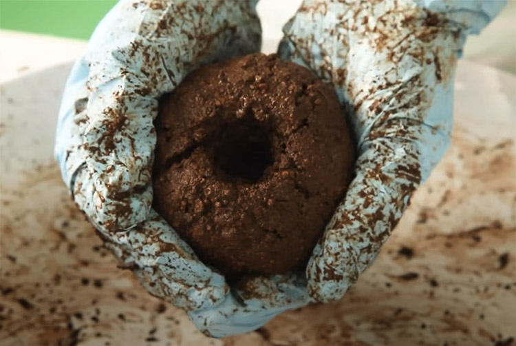

Kokedama is a Japanese art form of growing plants in a ball of moss and soil.
Gather Materials: Akadama soil, sphagnum sheet moss, bowl, water, twine, gloves, scissors, and a plant.Use gloves to mix soil and water, gradually add water to the soil while making a ball shape. You’ll know you have the right mix when it holds together its shape and is moist to the touch.Hold the ball in both hands and press one thumb into the top to make a hole for your plant’s roots.Grab your plant and slip the roots into the hole and gently pack the ball around them.Now wrap your ball in sphagnum sheet moss.Place the soil ball in the middle and wrap it with moss. You can dampen it by soaking the moss in warm water, if you’d like. The moss will retain the water.To secure the moss in place, hold the ball in one hand and wind the twine around it in all directions.Start at the bottom and leave a piece of longer twine exposed so you can tie it off when you’re done wrapping. Secure the twine by knotting it. If you'd like to hang it leave an extended section of string.To water you can soak it in a bowl and can add liquid fertilizer to the water or spray fertilizer.Place your kokedama indoors or in a shaded outdoor area. Enjoy your beautiful kokedamas!
 Grab your plant and slip the roots into the hole and gently pack the ball around them.
Grab your plant and slip the roots into the hole and gently pack the ball around them.